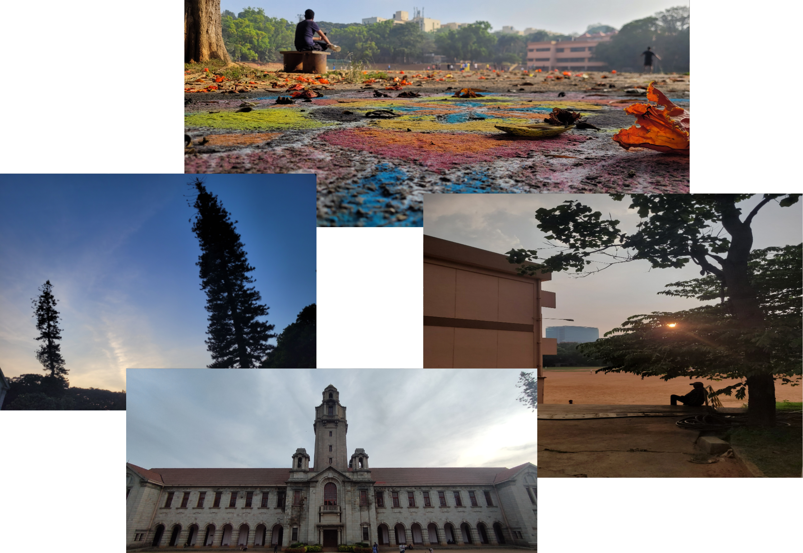

IISc Food Fiesta 2023
28th and 29th January

Fostering community through food.
The IISc Food Fiesta is a celebration of the cultural diversity of the Indian Institute of Science community and provides an opportunity to try different cuisines. The event also promotes awareness and understanding of different cultures and is a celebration of the diversity and unity of the IISc community
28th January: Opening Ceremony
29th January: Main Event
Venue: IISc Gymkhana Ground
Events
Speed Eating
Level 1: Too Hot to Handle
8th January, 4:30pm, B Mess
Top 30 qualify for the next level
Level 2: Sweet Tooth
15th January, 4:30pm, NBH
Top 10 qualify for the next level
Level 3: The Hungry Games
22nd January, 7:00pm, E Mess
Instagram Reels
Participants have to create a reel video on the theme “History of food”.
Maximum time limit for the reel is 60 seconds.
Only one video per participant is allowed.
Participants must post their reel on their personal Social Media accounts. Participants must tag the official Social Media page of IFF.
Last Date of Submission: 28th January
Food Photography
There are four categories in this competition.
- Veg
- non-veg
- snacks
- dessert
Last Date of Submission: 20th January.
Cooking
A team of 3 participants are required to participate in this event. Participants need to make food without any source of fire or electricity and hear. A time duration of 2 hours will be given. Every team has to make a drink and a dish during this duration.
14th January, B Mess
About IISc
The Indian Institute of Science (IISc) is a public, deemed, research university for higher education and research in science, engineering, design, and management. It claims a large, green campus in Bengaluru, Karnataka. The institute was established in 1909 with active support from Jamsetji Tata. It is ranked among the most prestigious academic institutions in India and was granted the Institute of Eminence status in 2018.
About Us
The IISc Mess Committee is a group of dedicated students who are passionate about food and community. Our goal is to provide a platform for people to come together and enjoy the delicious cuisines of India and beyond. Our food festival is a celebration of the rich diversity of our community, and we invite everyone to join us in this exciting event.
Shreenabh Agrawal
Swapnanil Mandal
Souptik Dey
Aditya Sahu
Pankaj Chaturvedi
Uddipan Ghosh
Shanmukh
Prajjwal Das
Swapnanil Mandal
Souptik Dey
Aditya Sahu
Pankaj Chaturvedi
Uddipan Ghosh
Shanmukh
Prajjwal Das
Srishty
Harsimran
Rahul
Chetan
Sunil
Nandini
Rachita
Palash
Akhil
Harsimran
Rahul
Chetan
Sunil
Nandini
Rachita
Palash
Akhil
Camellia
Durgesh
Durgesh
Umang Majumder